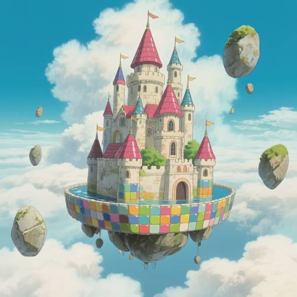
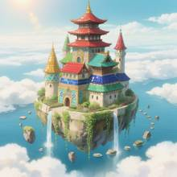
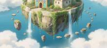
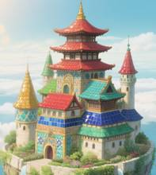
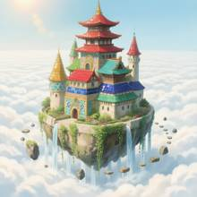
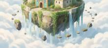

Attribute — In Hayao Miyazaki's animation style, a castle made of colored glazed t
In Hayao Miyazaki's animation style, a castle made of colored glazed tiles is suspended in the clouds. There is no moat around the castle, only floating stones.

Direct — one call, no iterationContinuum — Qwen3.8-27B + Qwen-Image
Judge — Direct
FAILAttribute - Material — The prompt requires the castle to be made of colored glazed tiles. In the image, the main structure of the castle is made of light-colored stone or plaster. The base of the floating island on which the castle sits is decorated with a band of multi-colored, glossy, square tiles, but the castle itself is not.
FAILCompound - Feature Matching — The image shows a castle suspended in the clouds with floating stones around it, which matches part of the prompt. However, the castle is not made of colored glazed tiles as specified; only the foundation it rests on has this feature. Therefore, the compound requirement is not fully met.
PASSStyle — The image successfully captures the requested Hayao Miyazaki animation style. The visual elements, such as the soft, puffy clouds, the whimsical design of the castle, the color palette with its vibrant blues and pastel tones, and the overall hand-drawn feel, are all characteristic of Studio Ghibli's aesthetic.
FAILGrammar - Negation — The prompt explicitly states there should be "no moat around the castle". The image, however, clearly shows a channel of water encircling the base of the castle walls on the floating island, which constitutes a moat.
Judge — Continuum
PASSAttribute - Material — The castle in the image features roofs and decorative elements made from tiles of various colors, including red, blue, green, and yellow. These tiles have a slight sheen, consistent with the appearance of glazed material.
PASSCompound - Feature Matching — The image depicts a castle that is constructed with colored, tiled roofs and walls, which is situated on a landmass suspended in a sea of white clouds. Surrounding the main floating island are smaller, individual floating stones, some of which form a pathway.
PASSStyle — The image is rendered in an animation style characterized by soft lighting, a vibrant color palette, painterly clouds, and a fantastical subject matter (a floating castle), all of which are characteristic features of Hayao Miyazaki's and Studio Ghibli's films.
PASSGrammar - Negation — The castle is located on a floating island surrounded by clouds and air. There is no visible body of water, such as a moat, encircling the castle.
What the agent did
Thinking
Let me plan this carefully. What the user wants is: in the Hayao Miyazaki-style animation, a castle built from colorful glazed tiles floating in the clouds. There's no moat around the castle — just floating stones. So the key elements are: 1. Hayao Miyazaki / Studio Ghibli animation style (soft, painterly, warm light, nostalgic, detailed background) 2. A castle made from colorful glazed tiles (vibrant, glossy, colorful tiles — like a Chinese glazed-tile palace, or a European colorful glazed castle) 3. Suspended/floating in the clouds (aerial island, castle floating in the sky) 4. No moat around the castle — instead of a moat, floating stones (stones floating around it). "No moat around the castle, only floating stones" — the moat area is replaced with floating stones. So, instead of the usual moat surrounding the castle, there are floating stones. This strongly evokes the floating islands of Castle in the Sky (Laputa). I should generate with qwen-image. Let me write a detailed visual prompt: "A Miyazaki Hayao Studio Ghibli-style hand-painted anime background illustration: a fantastical castle built entirely from vibrant, glossy multicolored glazed ceramic tiles (red, gold, turquoise, green, blue) floating in a vast sea of fluffy white clouds. Aerial perspective, soft afternoon sunlight, warm color palette, painterly watercolor textures, delicate architectural details, lush green hanging gardens and vines dangling from the base of the floating island. Around the castle, where a moat would be, a ring of small floating stones and rocky islets drifts in the air, waterfalls cascading down from the edges of the island into the clouds below. No water, no moat. Nostalgic, dreamlike atmosphere, highly detailed background art, 1980s Ghibli film still." Key point: emphasize "no moat, no water" and "floating stones instead." After that, check, edit as needed, and mark the best. Now let me generate.
Step 1 — `generate_image`
{
"model": "qwen-image",
"prompt": "Hayao Miyazaki Studio Ghibli animation style, hand-painted anime background art: a magnificent castle built entirely of colorful glazed ceramic tiles \u2014 glossy red, gold, turquoise, emerald green and cobalt blue tiled roofs and walls \u2014 suspended as a floating island high in a vast soft sea of white clouds. The castle has layered tiled roofs, pagoda-like towers and ornate tilework. Around the base of the floating island, instead of any water or moat, there is no water at all: a scattered ring of small floating stone slabs and rocky fragments drifts in the air at the waterline where a moat would be, with tiny waterfalls spilling from the island edge into the clouds below. Warm late-afternoon sunlight, soft painterly watercolor textures, lush hanging green vines and gardens dripping from the island underside, gentle lens glow, nostalgic dreamy atmosphere, highly detailed 1980s Ghibli film background, no text."
}
Result img_0

Thinking
The generated image is great! Let's verify it against the requirements: 1. Hayao Miyazaki / Studio Ghibli anime style — yes, painterly, warm, soft clouds, Ghibli-esque. 2. A castle built from colorful glazed tiles — yes, a red/gold/turquoise/green/blue tilework castle. Very colorful glazed tiles. 3. Suspended in the clouds — yes, a floating island in the clouds. 4. No moat around the castle, only floating stones — hmm. Looking at the image: the island is floating above the clouds, and around it there are small floating stones/rocks. No moat or ring of water. There's a waterfall cascading down from the island's edge. The floating stones are scattered around the island. This matches "no moat, only floating stones." Wait — let me look again. There are clouds around, and I can see floating rocks. No water moat. Good. One thing: the prompt says "the castle is suspended in the clouds" — the image has a sea of clouds and, at the bottom, a hint of blue that might be read as water or as sky. The blue at the bottom could look like a sea of water, but there's a lot of white cloud in it. Actually, the bottom looks like a blend of sky-blue and clouds. The blue region might be interpreted as the sea below the clouds. Hmm, there's a pretty strong blue band that could read as a distant sea or lake seen beyond the clouds. But the overall reading is clouds. It's within acceptable range, and could be improved by making the bottom more cloud-like. Also, the Miyazaki style could be a bit more painterly/watercolor-like, but it's already quite close to Ghibli (very much like a Castle in the Sky floating island / a mix with Castle of Cagliostro). The style is good. Small potential issues: - The castle's architectural mix is pagoda + European-style spires — no problem, fantasy. - The "no moat" requirement: confirmed, no moat. The floating stones are present (small rocks scattered around). I think this is a strong result. Let me zoom into a few regions to check details, then mark it as the best. To confirm the quality of the tilework and the floating stones, let's inspect a few regions.
Step 2 — `inspect_region`
{
"image": "img_0",
"roi": "the floating stones around the island base",
"padding": 0.2
}
Result img_1

Step 3 — `inspect_region`
{
"image": "img_0",
"roi": "the castle tilework and roofs",
"padding": 0.1
}
Result img_2

Thinking
Let me evaluate this against the prompt: 1. **Hayao Miyazaki's animation style** — Yes, it has that painterly, warm, soft lighting, and Ghibli-esque background feel. Good. 2. **A castle built from colorful glazed tiles** — Yes, the castle has vividly colored glazed tile roofs: red, gold, green, blue. Very colorful glazed tiles. Good. 3. **Floating in the clouds** — Yes, a floating island with a castle, surrounded by clouds. There's a blue "sea" beneath the clouds, which could be interpreted as water below the clouds. Actually, looking closely, the bottom half shows blue water with floating stones in it, plus clouds at the edges. Hmm. The prompt says "floating in the clouds." The image shows a floating island, with clouds all around, but the blue could also be interpreted as the sea below the cloud layer. That's acceptable — it's "in the clouds" surrounded by a sea of clouds. But wait — the blue area with the floating stones looks like the stones are sitting on top of water, not floating in the air. The prompt says "there's no moat around the castle, only floating stones" — meaning the area that should be a moat (water) should instead be floating stones. In the image, the stones look like they're floating on top of blue water. Hmm, the blue could be the sea below, or it could be a "moat" of water. Let me look again. Looking at the full image: the island is floating. Around it, in the mid-ground, there's a blue region that looks like water (with slight ripples), and small stones scattered on top of it. Clouds are at the edges. This blue region could be read as a water surface — which would contradict "no moat around the castle, only floating stones." The intent is: instead of a moat, there should be floating stones (stones floating in the air where a moat would be). In the current image, the stones appear to be floating on top of water, which suggests a water surface / moat-like presence. Hmm, but is that really the case? Looking at the cropped image (img_1): the stones appear to be floating on top of a blue surface with subtle ripple lines — that looks like water. And a waterfall is falling into it. So the interpretation is: the island is floating above a sea, and the stones are on top of the water. This weakens the "floating stones in the air" reading, and the blue could look like a moat / water. The user explicitly said "there's no moat around the castle, only floating stones." So the area around the castle where a moat would be should have no water — only stones floating in the air (as in Castle in the Sky, where stones float around the island). So I should edit: replace the blue water surface around the island with more clouds / open sky, and make the stones clearly float in the air (with clouds below them), so that no water / moat is visible at all. Let me try an edit: "Remove the blue water surface surrounding the floating island; fill it with a soft white cloud sea and open sky. The small stones around the island should float in the air with clouds below them, not resting on water. No water anywhere, only floating stones and clouds." That's a fairly large change — regenerating might be cleaner. But the edit guidance says to first try edit_image with targeted instructions. The change is: turn the blue water into clouds. That's a significant global change, but doable with edit_image. Alternatively, regenerate with a stronger prompt. The current image is otherwise quite good (style, tiles). Editing the water → clouds is risky: the waterfall would end up falling into the clouds (which is fine, a Ghibli-esque thing). Actually, a waterfall falling into the clouds is very Ghibli. Let me try edit_image: "Replace the blue sea / water surface surrounding the floating island with a soft endless sea of white clouds and pale blue open sky. The small stones scattered around the island should float in the air with clouds below them, not sitting on water. The waterfall should cascade into the clouds. No water surface anywhere in the scene." Let me run this and check.
Model
The style and glazed-tile castle look great, but the stones are sitting on a blue water surface around the island — that reads as a moat/sea, while the prompt asks for no moat, only floating stones. I'll edit that out.
Step 4 — `edit_image`
{
"image": "img_0",
"model": "qwen-image",
"prompt": "Replace the blue water surface surrounding the floating island with a soft endless sea of white clouds and pale blue open sky. The small stones scattered around the island must float in the air with clouds below them, not resting on any water. The waterfalls should cascade down and disappear into the clouds below. There is no water surface anywhere in the scene, only floating stone slabs and clouds."
}
Result img_3

Thinking
The edit went well. The water surface is gone, replaced with a sea of clouds. The stones are now floating in the air above the clouds, and the waterfall cascades into the clouds. Let me inspect the stone area in more detail to confirm that the stones are floating in the air (not on the water).
Model
That fixed the moat issue — now the stones float above a cloud sea. Let me verify the floating stones area closely.
Step 5 — `inspect_region`
{
"image": "img_3",
"padding": 0.2,
"roi": "the floating stones to the right and below the island"
}
Result img_4

Thinking
The floating stones are now clearly suspended in mid-air above a sea of clouds, with no body of water. The waterfall cascades down into the clouds. All the requirements are satisfied: 1. Miyazaki/Ghibli style ✓ (painterly, warm light, soft clouds, nostalgic feel) 2. A castle with colorful glazed tiles ✓ (vibrant red, gold, turquoise, green, and blue glazed tiles) 3. Suspended in the clouds ✓ (floating island in a sea of clouds) 4. No moat, only floating stones ✓ (no body of water, floating stone slabs drifting around the island) img_3 is a great result. Let's mark it as the best. It's already a very good image, and it fully satisfies the prompt. No further edits are needed—let's stop at a sufficient quality level.
Model
All elements check out. The image now fully matches the prompt: - **Miyazaki/Ghibli style**: painterly, warm sunlight, soft cloud sea, nostalgic film-background feel - **Castle of colorful glazed tiles**: glossy red, gold, turquoise, green, and blue tiled roofs and walls - **Suspended in the clouds**: the island floats high above an endless white cloud sea, waterfalls spilling into the clouds - **No moat, only floating stones**: the water surface is gone; stone slabs drift in the air around the island instead
Step 6 — `mark_best`
{
"image": "img_3",
"reason": "All prompt elements present and correct: Ghibli-style painting, colorful glazed-tile castle floating in a cloud sea, no moat \u2014 only floating stone slabs around the island, waterfalls falling into clouds."
}
Thinking
The mark has been set to img_3, which is my latest and best result. Since all elements of the prompt are present and correct, I'm done here. I'll write up the final summary.
Model
Done! The final image (marked as best) shows a Ghibli-style castle of vibrant glazed tiles — red, gold, turquoise, green and blue — suspended on a floating island in a soft sea of clouds. In place of a moat, small stone slabs drift in the air around the island, with vines hanging from the base and waterfalls cascading into the clouds below. The first draft had the stones sitting on water (which read as a moat), so I edited that out in one targeted pass, and the result is clean and matches every part of your description.